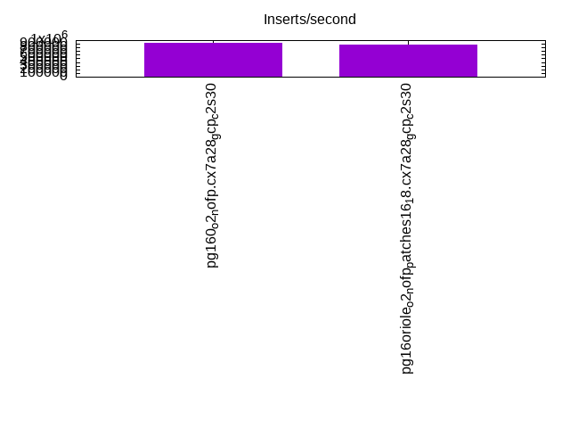
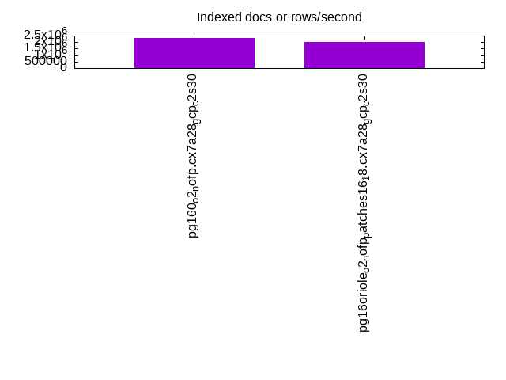
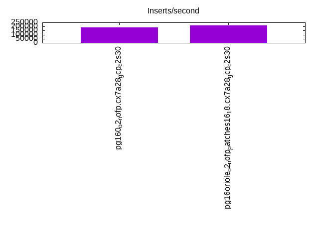
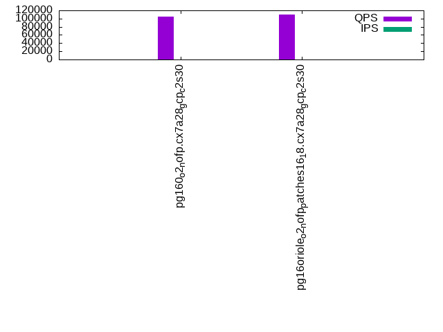
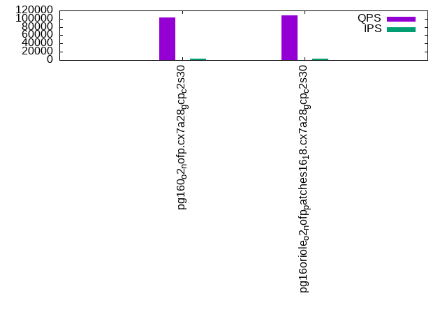
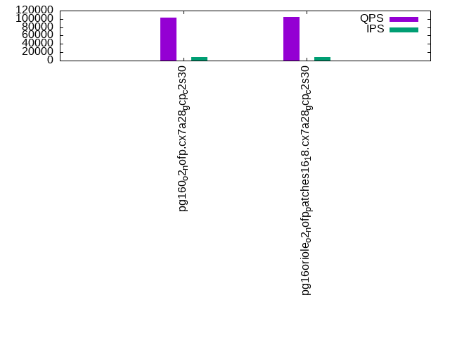

This is a report for the insert benchmark with 160M docs and 8 client(s). It is generated by scripts (bash, awk, sed) and Tufte might not be impressed. An overview of the insert benchmark is here and a short update is here. Below, by DBMS, I mean DBMS+version.config. An example is my8020.c10b40 where my means MySQL, 8020 is version 8.0.20 and c10b40 is the name for the configuration file.
The test server is a c2-standard-30 with 15 cores, hyperthreads disabled, 120G RAM and XFS with SW RAID 0 across 4 NVMe SSD. The benchmark was run with 8 clients and there were 1 or 3 connections per client (1 for queries or inserts without rate limits, 1+1 for rate limited inserts+deletes). It uses 8 tables, 1 per client. It loads 20M rows per table without secondary indexes, creates secondary indexes, then inserts 300M rows per table with a delete per insert to avoid growing the table. It then does 3 read+write tests for 7200s each that do queries as fast as possible with 100, 500 and then 1000 inserts/second/client concurrent with the queries. There are also deletes to match the inserts and avoid growing the table. The database is cached by Postgres. Clients and the DBMS share one server. The per-database configs are in the per-database subdirectories here.
The tested DBMS are:
The numbers are inserts/s for l.i0 and l.i1, indexed docs (or rows) /s for l.x and queries/s for q*.2. The values are the average rate over the entire test for inserts (IPS) and queries (QPS). The range of values for IPS and QPS is split into 3 parts: bottom 25%, middle 50%, top 25%. Values in the bottom 25% have a red background, values in the top 25% have a green background and values in the middle have no color. A gray background is used for values that can be ignored because the DBMS did not sustain the target insert rate. Red backgrounds are not used when the minimum value is within 80% of the max value.
| dbms | l.i0 | l.x | l.i1 | q100.1 | q500.1 | q1000.1 |
|---|---|---|---|---|---|---|
| pg160_o2_nofp.cx7a28_gcp_c2s30 | 919540 | 2287143 | 187368 | 105568 | 103207 | 102496 |
| pg16oriole_o2_nofp_patches16_18.cx7a28_gcp_c2s30 | 879121 | 2001250 | 213466 | 109837 | 107352 | 104953 |
This table has relative throughput, throughput for the DBMS relative to the DBMS in the first line, using the absolute throughput from the previous table. Values less than 0.95 have a yellow background. Values greater than 1.05 have a blue background.
| dbms | l.i0 | l.x | l.i1 | q100.1 | q500.1 | q1000.1 |
|---|---|---|---|---|---|---|
| pg160_o2_nofp.cx7a28_gcp_c2s30 | 1.00 | 1.00 | 1.00 | 1.00 | 1.00 | 1.00 |
| pg16oriole_o2_nofp_patches16_18.cx7a28_gcp_c2s30 | 0.96 | 0.87 | 1.14 | 1.04 | 1.04 | 1.02 |
This lists the average rate of inserts/s for the tests that do inserts concurrent with queries. For such tests the query rate is listed in the table above. The read+write tests are setup so that the insert rate should match the target rate every second. Cells that are not at least 95% of the target have a red background to indicate a failure to satisfy the target.
| dbms | q100.1 | q500.1 | q1000.1 |
|---|---|---|---|
| pg160_o2_nofp.cx7a28_gcp_c2s30 | 798 | 3991 | 7984 |
| pg16oriole_o2_nofp_patches16_18.cx7a28_gcp_c2s30 | 798 | 3992 | 7983 |
| target | 800 | 4000 | 8000 |
l.i0: load without secondary indexes. Graphs for performance per 1-second interval are here.
Average throughput:
Insert response time histogram: each cell has the percentage of responses that take <= the time in the header and max is the max response time in seconds. For the max column values in the top 25% of the range have a red background and in the bottom 25% of the range have a green background. The red background is not used when the min value is within 80% of the max value.
| dbms | 256us | 1ms | 4ms | 16ms | 64ms | 256ms | 1s | 4s | 16s | gt | max |
|---|---|---|---|---|---|---|---|---|---|---|---|
| pg160_o2_nofp.cx7a28_gcp_c2s30 | 97.948 | 1.995 | 0.040 | 0.009 | 0.006 | 0.002 | 0.342 | ||||
| pg16oriole_o2_nofp_patches16_18.cx7a28_gcp_c2s30 | 98.969 | 0.975 | 0.005 | 0.052 | 0.184 |
Performance metrics for the DBMS listed above. Some are normalized by throughput, others are not. Legend for results is here.
ips qps rps rmbps wps wmbps rpq rkbpq wpi wkbpi csps cpups cspq cpupq dbgb1 dbgb2 rss maxop p50 p99 tag 919540 0 0 0.0 1065.3 334.2 0.000 0.000 0.001 0.372 82747 75.6 0.090 12 15.3 41.9 3.1 0.342 129157 66627 160m.pg160_o2_nofp.cx7a28_gcp_c2s30 879121 0 0 0.0 232.2 68.8 0.000 0.000 0.000 0.080 89469 71.2 0.102 12 0.0 9.2 12.6 0.184 118911 101890 160m.pg16oriole_o2_nofp_patches16_18.cx7a28_gcp_c2s30
l.x: create secondary indexes.
Average throughput:
Performance metrics for the DBMS listed above. Some are normalized by throughput, others are not. Legend for results is here.
ips qps rps rmbps wps wmbps rpq rkbpq wpi wkbpi csps cpups cspq cpupq dbgb1 dbgb2 rss maxop p50 p99 tag 2287143 0 0 0.0 1391.2 530.8 0.000 0.000 0.001 0.238 15464 37.9 0.007 2 29.4 61.5 13.2 0.002 NA NA 160m.pg160_o2_nofp.cx7a28_gcp_c2s30 2001250 0 1 0.0 910.9 289.2 0.000 0.000 0.000 0.148 4501 45.9 0.002 3 0.0 28.7 11.7 0.002 NA NA 160m.pg16oriole_o2_nofp_patches16_18.cx7a28_gcp_c2s30
l.i1: continue load after secondary indexes created. Graphs for performance per 1-second interval are here.
Average throughput:
Insert response time histogram: each cell has the percentage of responses that take <= the time in the header and max is the max response time in seconds. For the max column values in the top 25% of the range have a red background and in the bottom 25% of the range have a green background. The red background is not used when the min value is within 80% of the max value.
| dbms | 256us | 1ms | 4ms | 16ms | 64ms | 256ms | 1s | 4s | 16s | gt | max |
|---|---|---|---|---|---|---|---|---|---|---|---|
| pg160_o2_nofp.cx7a28_gcp_c2s30 | 0.057 | 98.873 | 0.441 | 0.575 | 0.053 | 0.001 | nonzero | 20.387 | |||
| pg16oriole_o2_nofp_patches16_18.cx7a28_gcp_c2s30 | nonzero | 97.586 | 2.245 | 0.017 | 0.152 | nonzero | 2.907 |
Delete response time histogram: each cell has the percentage of responses that take <= the time in the header and max is the max response time in seconds. For the max column values in the top 25% of the range have a red background and in the bottom 25% of the range have a green background. The red background is not used when the min value is within 80% of the max value.
| dbms | 256us | 1ms | 4ms | 16ms | 64ms | 256ms | 1s | 4s | 16s | gt | max |
|---|---|---|---|---|---|---|---|---|---|---|---|
| pg160_o2_nofp.cx7a28_gcp_c2s30 | 76.041 | 8.932 | 10.540 | 4.104 | 0.345 | 0.038 | 0.001 | nonzero | 20.388 | ||
| pg16oriole_o2_nofp_patches16_18.cx7a28_gcp_c2s30 | nonzero | 49.228 | 50.222 | 0.508 | 0.017 | 0.025 | nonzero | 2.688 |
Performance metrics for the DBMS listed above. Some are normalized by throughput, others are not. Legend for results is here.
ips qps rps rmbps wps wmbps rpq rkbpq wpi wkbpi csps cpups cspq cpupq dbgb1 dbgb2 rss maxop p50 p99 tag 187368 0 0 0.0 10281.3 873.0 0.000 0.000 0.055 4.771 73249 69.5 0.391 56 41.6 73.7 28.8 20.387 27420 2299 160m.pg160_o2_nofp.cx7a28_gcp_c2s30 213466 0 1 0.1 19924.1 316.7 0.000 0.000 0.093 1.519 141176 81.1 0.661 57 0.0 305.1 53.2 2.907 27970 15633 160m.pg16oriole_o2_nofp_patches16_18.cx7a28_gcp_c2s30
q100.1: range queries with 100 insert/s per client. Graphs for performance per 1-second interval are here.
Average throughput:
Query response time histogram: each cell has the percentage of responses that take <= the time in the header and max is the max response time in seconds. For max values in the top 25% of the range have a red background and in the bottom 25% of the range have a green background. The red background is not used when the min value is within 80% of the max value.
| dbms | 256us | 1ms | 4ms | 16ms | 64ms | 256ms | 1s | 4s | 16s | gt | max |
|---|---|---|---|---|---|---|---|---|---|---|---|
| pg160_o2_nofp.cx7a28_gcp_c2s30 | 99.998 | 0.002 | nonzero | nonzero | 0.008 | ||||||
| pg16oriole_o2_nofp_patches16_18.cx7a28_gcp_c2s30 | 99.997 | 0.002 | 0.001 | nonzero | nonzero | nonzero | nonzero | nonzero | 3.175 |
Insert response time histogram: each cell has the percentage of responses that take <= the time in the header and max is the max response time in seconds. For max values in the top 25% of the range have a red background and in the bottom 25% of the range have a green background. The red background is not used when the min value is within 80% of the max value.
| dbms | 256us | 1ms | 4ms | 16ms | 64ms | 256ms | 1s | 4s | 16s | gt | max |
|---|---|---|---|---|---|---|---|---|---|---|---|
| pg160_o2_nofp.cx7a28_gcp_c2s30 | 99.963 | 0.037 | 0.012 | ||||||||
| pg16oriole_o2_nofp_patches16_18.cx7a28_gcp_c2s30 | 99.982 | 0.012 | 0.003 | 0.001 | 0.003 | 3.175 |
Delete response time histogram: each cell has the percentage of responses that take <= the time in the header and max is the max response time in seconds. For max values in the top 25% of the range have a red background and in the bottom 25% of the range have a green background. The red background is not used when the min value is within 80% of the max value.
| dbms | 256us | 1ms | 4ms | 16ms | 64ms | 256ms | 1s | 4s | 16s | gt | max |
|---|---|---|---|---|---|---|---|---|---|---|---|
| pg160_o2_nofp.cx7a28_gcp_c2s30 | 66.362 | 10.201 | 19.808 | 3.627 | 0.002 | 0.017 | |||||
| pg16oriole_o2_nofp_patches16_18.cx7a28_gcp_c2s30 | 71.835 | 28.161 | 0.003 | 0.001 | 0.016 |
Performance metrics for the DBMS listed above. Some are normalized by throughput, others are not. Legend for results is here.
ips qps rps rmbps wps wmbps rpq rkbpq wpi wkbpi csps cpups cspq cpupq dbgb1 dbgb2 rss maxop p50 p99 tag 798 105568 0 0.0 336.8 11.9 0.000 0.000 0.422 15.226 403478 53.3 3.822 76 41.6 73.7 4.8 0.008 13266 13042 160m.pg160_o2_nofp.cx7a28_gcp_c2s30 798 109837 0 0.0 291.1 12.2 0.000 0.000 0.365 15.625 419293 53.3 3.817 73 0.0 174.5 53.2 3.175 13670 11859 160m.pg16oriole_o2_nofp_patches16_18.cx7a28_gcp_c2s30
q500.1: range queries with 500 insert/s per client. Graphs for performance per 1-second interval are here.
Average throughput:
Query response time histogram: each cell has the percentage of responses that take <= the time in the header and max is the max response time in seconds. For max values in the top 25% of the range have a red background and in the bottom 25% of the range have a green background. The red background is not used when the min value is within 80% of the max value.
| dbms | 256us | 1ms | 4ms | 16ms | 64ms | 256ms | 1s | 4s | 16s | gt | max |
|---|---|---|---|---|---|---|---|---|---|---|---|
| pg160_o2_nofp.cx7a28_gcp_c2s30 | 99.989 | 0.007 | 0.004 | nonzero | nonzero | nonzero | nonzero | 0.829 | |||
| pg16oriole_o2_nofp_patches16_18.cx7a28_gcp_c2s30 | 99.981 | 0.012 | 0.007 | nonzero | nonzero | nonzero | nonzero | 0.353 |
Insert response time histogram: each cell has the percentage of responses that take <= the time in the header and max is the max response time in seconds. For max values in the top 25% of the range have a red background and in the bottom 25% of the range have a green background. The red background is not used when the min value is within 80% of the max value.
| dbms | 256us | 1ms | 4ms | 16ms | 64ms | 256ms | 1s | 4s | 16s | gt | max |
|---|---|---|---|---|---|---|---|---|---|---|---|
| pg160_o2_nofp.cx7a28_gcp_c2s30 | 99.915 | 0.077 | 0.003 | 0.003 | 0.002 | 0.893 | |||||
| pg16oriole_o2_nofp_patches16_18.cx7a28_gcp_c2s30 | 99.518 | 0.448 | 0.007 | 0.025 | 0.002 | 0.483 |
Delete response time histogram: each cell has the percentage of responses that take <= the time in the header and max is the max response time in seconds. For max values in the top 25% of the range have a red background and in the bottom 25% of the range have a green background. The red background is not used when the min value is within 80% of the max value.
| dbms | 256us | 1ms | 4ms | 16ms | 64ms | 256ms | 1s | 4s | 16s | gt | max |
|---|---|---|---|---|---|---|---|---|---|---|---|
| pg160_o2_nofp.cx7a28_gcp_c2s30 | 77.728 | 11.682 | 10.119 | 0.465 | 0.001 | 0.002 | 0.002 | 0.825 | |||
| pg16oriole_o2_nofp_patches16_18.cx7a28_gcp_c2s30 | 93.991 | 5.730 | 0.277 | 0.001 | 0.001 | nonzero | 0.486 |
Performance metrics for the DBMS listed above. Some are normalized by throughput, others are not. Legend for results is here.
ips qps rps rmbps wps wmbps rpq rkbpq wpi wkbpi csps cpups cspq cpupq dbgb1 dbgb2 rss maxop p50 p99 tag 3991 103207 0 0.0 254.5 20.6 0.000 0.000 0.064 5.283 394967 54.2 3.827 79 41.6 73.7 12.0 0.829 13042 11124 160m.pg160_o2_nofp.cx7a28_gcp_c2s30 3992 107352 0 0.0 674.4 19.8 0.000 0.000 0.169 5.071 409909 54.1 3.818 76 0.0 178.9 53.2 0.353 13409 11491 160m.pg16oriole_o2_nofp_patches16_18.cx7a28_gcp_c2s30
q1000.1: range queries with 1000 insert/s per client. Graphs for performance per 1-second interval are here.
Average throughput:
Query response time histogram: each cell has the percentage of responses that take <= the time in the header and max is the max response time in seconds. For max values in the top 25% of the range have a red background and in the bottom 25% of the range have a green background. The red background is not used when the min value is within 80% of the max value.
| dbms | 256us | 1ms | 4ms | 16ms | 64ms | 256ms | 1s | 4s | 16s | gt | max |
|---|---|---|---|---|---|---|---|---|---|---|---|
| pg160_o2_nofp.cx7a28_gcp_c2s30 | 99.956 | 0.034 | 0.010 | nonzero | nonzero | nonzero | 0.194 | ||||
| pg16oriole_o2_nofp_patches16_18.cx7a28_gcp_c2s30 | 99.945 | 0.041 | 0.014 | 0.001 | nonzero | nonzero | nonzero | 0.469 |
Insert response time histogram: each cell has the percentage of responses that take <= the time in the header and max is the max response time in seconds. For max values in the top 25% of the range have a red background and in the bottom 25% of the range have a green background. The red background is not used when the min value is within 80% of the max value.
| dbms | 256us | 1ms | 4ms | 16ms | 64ms | 256ms | 1s | 4s | 16s | gt | max |
|---|---|---|---|---|---|---|---|---|---|---|---|
| pg160_o2_nofp.cx7a28_gcp_c2s30 | 99.549 | 0.422 | 0.023 | 0.006 | 0.196 | ||||||
| pg16oriole_o2_nofp_patches16_18.cx7a28_gcp_c2s30 | 98.856 | 1.054 | 0.038 | 0.050 | 0.002 | 0.440 |
Delete response time histogram: each cell has the percentage of responses that take <= the time in the header and max is the max response time in seconds. For max values in the top 25% of the range have a red background and in the bottom 25% of the range have a green background. The red background is not used when the min value is within 80% of the max value.
| dbms | 256us | 1ms | 4ms | 16ms | 64ms | 256ms | 1s | 4s | 16s | gt | max |
|---|---|---|---|---|---|---|---|---|---|---|---|
| pg160_o2_nofp.cx7a28_gcp_c2s30 | 78.338 | 11.943 | 9.530 | 0.181 | 0.006 | 0.003 | 0.194 | ||||
| pg16oriole_o2_nofp_patches16_18.cx7a28_gcp_c2s30 | 91.136 | 8.085 | 0.759 | 0.019 | 0.001 | 0.205 |
Performance metrics for the DBMS listed above. Some are normalized by throughput, others are not. Legend for results is here.
ips qps rps rmbps wps wmbps rpq rkbpq wpi wkbpi csps cpups cspq cpupq dbgb1 dbgb2 rss maxop p50 p99 tag 7984 102496 0 0.0 394.7 38.3 0.000 0.000 0.049 4.915 391389 55.1 3.819 81 41.5 73.5 22.7 0.194 12866 10932 160m.pg160_o2_nofp.cx7a28_gcp_c2s30 7983 104953 0 0.0 725.7 22.7 0.000 0.000 0.091 2.917 400005 55.1 3.811 79 0.0 184.9 53.2 0.469 13254 11060 160m.pg16oriole_o2_nofp_patches16_18.cx7a28_gcp_c2s30
l.i0: load without secondary indexes
Performance metrics for all DBMS, not just the ones listed above. Some are normalized by throughput, others are not. Legend for results is here.
ips qps rps rmbps wps wmbps rpq rkbpq wpi wkbpi csps cpups cspq cpupq dbgb1 dbgb2 rss maxop p50 p99 tag 919540 0 0 0.0 1065.3 334.2 0.000 0.000 0.001 0.372 82747 75.6 0.090 12 15.3 41.9 3.1 0.342 129157 66627 160m.pg160_o2_nofp.cx7a28_gcp_c2s30 879121 0 0 0.0 232.2 68.8 0.000 0.000 0.000 0.080 89469 71.2 0.102 12 0.0 9.2 12.6 0.184 118911 101890 160m.pg16oriole_o2_nofp_patches16_18.cx7a28_gcp_c2s30
l.x: create secondary indexes
Performance metrics for all DBMS, not just the ones listed above. Some are normalized by throughput, others are not. Legend for results is here.
ips qps rps rmbps wps wmbps rpq rkbpq wpi wkbpi csps cpups cspq cpupq dbgb1 dbgb2 rss maxop p50 p99 tag 2287143 0 0 0.0 1391.2 530.8 0.000 0.000 0.001 0.238 15464 37.9 0.007 2 29.4 61.5 13.2 0.002 NA NA 160m.pg160_o2_nofp.cx7a28_gcp_c2s30 2001250 0 1 0.0 910.9 289.2 0.000 0.000 0.000 0.148 4501 45.9 0.002 3 0.0 28.7 11.7 0.002 NA NA 160m.pg16oriole_o2_nofp_patches16_18.cx7a28_gcp_c2s30
l.i1: continue load after secondary indexes created
Performance metrics for all DBMS, not just the ones listed above. Some are normalized by throughput, others are not. Legend for results is here.
ips qps rps rmbps wps wmbps rpq rkbpq wpi wkbpi csps cpups cspq cpupq dbgb1 dbgb2 rss maxop p50 p99 tag 187368 0 0 0.0 10281.3 873.0 0.000 0.000 0.055 4.771 73249 69.5 0.391 56 41.6 73.7 28.8 20.387 27420 2299 160m.pg160_o2_nofp.cx7a28_gcp_c2s30 213466 0 1 0.1 19924.1 316.7 0.000 0.000 0.093 1.519 141176 81.1 0.661 57 0.0 305.1 53.2 2.907 27970 15633 160m.pg16oriole_o2_nofp_patches16_18.cx7a28_gcp_c2s30
q100.1: range queries with 100 insert/s per client
Performance metrics for all DBMS, not just the ones listed above. Some are normalized by throughput, others are not. Legend for results is here.
ips qps rps rmbps wps wmbps rpq rkbpq wpi wkbpi csps cpups cspq cpupq dbgb1 dbgb2 rss maxop p50 p99 tag 798 105568 0 0.0 336.8 11.9 0.000 0.000 0.422 15.226 403478 53.3 3.822 76 41.6 73.7 4.8 0.008 13266 13042 160m.pg160_o2_nofp.cx7a28_gcp_c2s30 798 109837 0 0.0 291.1 12.2 0.000 0.000 0.365 15.625 419293 53.3 3.817 73 0.0 174.5 53.2 3.175 13670 11859 160m.pg16oriole_o2_nofp_patches16_18.cx7a28_gcp_c2s30
q500.1: range queries with 500 insert/s per client
Performance metrics for all DBMS, not just the ones listed above. Some are normalized by throughput, others are not. Legend for results is here.
ips qps rps rmbps wps wmbps rpq rkbpq wpi wkbpi csps cpups cspq cpupq dbgb1 dbgb2 rss maxop p50 p99 tag 3991 103207 0 0.0 254.5 20.6 0.000 0.000 0.064 5.283 394967 54.2 3.827 79 41.6 73.7 12.0 0.829 13042 11124 160m.pg160_o2_nofp.cx7a28_gcp_c2s30 3992 107352 0 0.0 674.4 19.8 0.000 0.000 0.169 5.071 409909 54.1 3.818 76 0.0 178.9 53.2 0.353 13409 11491 160m.pg16oriole_o2_nofp_patches16_18.cx7a28_gcp_c2s30
q1000.1: range queries with 1000 insert/s per client
Performance metrics for all DBMS, not just the ones listed above. Some are normalized by throughput, others are not. Legend for results is here.
ips qps rps rmbps wps wmbps rpq rkbpq wpi wkbpi csps cpups cspq cpupq dbgb1 dbgb2 rss maxop p50 p99 tag 7984 102496 0 0.0 394.7 38.3 0.000 0.000 0.049 4.915 391389 55.1 3.819 81 41.5 73.5 22.7 0.194 12866 10932 160m.pg160_o2_nofp.cx7a28_gcp_c2s30 7983 104953 0 0.0 725.7 22.7 0.000 0.000 0.091 2.917 400005 55.1 3.811 79 0.0 184.9 53.2 0.469 13254 11060 160m.pg16oriole_o2_nofp_patches16_18.cx7a28_gcp_c2s30
Insert response time histogram
256us 1ms 4ms 16ms 64ms 256ms 1s 4s 16s gt max tag 0.000 97.948 1.995 0.040 0.009 0.006 0.002 0.000 0.000 0.000 0.342 pg160_o2_nofp.cx7a28_gcp_c2s30 0.000 98.969 0.975 0.005 0.000 0.052 0.000 0.000 0.000 0.000 0.184 pg16oriole_o2_nofp_patches16_18.cx7a28_gcp_c2s30
TODO - determine whether there is data for create index response time
Insert response time histogram
256us 1ms 4ms 16ms 64ms 256ms 1s 4s 16s gt max tag 0.000 0.057 98.873 0.441 0.575 0.053 0.001 0.000 0.000 nonzero 20.387 pg160_o2_nofp.cx7a28_gcp_c2s30 0.000 nonzero 97.586 2.245 0.017 0.152 0.000 nonzero 0.000 0.000 2.907 pg16oriole_o2_nofp_patches16_18.cx7a28_gcp_c2s30
Delete response time histogram
256us 1ms 4ms 16ms 64ms 256ms 1s 4s 16s gt max tag 76.041 8.932 10.540 4.104 0.345 0.038 0.001 0.000 0.000 nonzero 20.388 pg160_o2_nofp.cx7a28_gcp_c2s30 nonzero 49.228 50.222 0.508 0.017 0.025 0.000 nonzero 0.000 0.000 2.688 pg16oriole_o2_nofp_patches16_18.cx7a28_gcp_c2s30
Query response time histogram
256us 1ms 4ms 16ms 64ms 256ms 1s 4s 16s gt max tag 99.998 0.002 nonzero nonzero 0.000 0.000 0.000 0.000 0.000 0.000 0.008 pg160_o2_nofp.cx7a28_gcp_c2s30 99.997 0.002 0.001 nonzero nonzero nonzero nonzero nonzero 0.000 0.000 3.175 pg16oriole_o2_nofp_patches16_18.cx7a28_gcp_c2s30
Insert response time histogram
256us 1ms 4ms 16ms 64ms 256ms 1s 4s 16s gt max tag 0.000 0.000 99.963 0.037 0.000 0.000 0.000 0.000 0.000 0.000 0.012 pg160_o2_nofp.cx7a28_gcp_c2s30 0.000 0.000 99.982 0.012 0.000 0.003 0.001 0.003 0.000 0.000 3.175 pg16oriole_o2_nofp_patches16_18.cx7a28_gcp_c2s30
Delete response time histogram
256us 1ms 4ms 16ms 64ms 256ms 1s 4s 16s gt max tag 66.362 10.201 19.808 3.627 0.002 0.000 0.000 0.000 0.000 0.000 0.017 pg160_o2_nofp.cx7a28_gcp_c2s30 0.000 71.835 28.161 0.003 0.001 0.000 0.000 0.000 0.000 0.000 0.016 pg16oriole_o2_nofp_patches16_18.cx7a28_gcp_c2s30
Query response time histogram
256us 1ms 4ms 16ms 64ms 256ms 1s 4s 16s gt max tag 99.989 0.007 0.004 nonzero nonzero nonzero nonzero 0.000 0.000 0.000 0.829 pg160_o2_nofp.cx7a28_gcp_c2s30 99.981 0.012 0.007 nonzero nonzero nonzero nonzero 0.000 0.000 0.000 0.353 pg16oriole_o2_nofp_patches16_18.cx7a28_gcp_c2s30
Insert response time histogram
256us 1ms 4ms 16ms 64ms 256ms 1s 4s 16s gt max tag 0.000 0.000 99.915 0.077 0.003 0.003 0.002 0.000 0.000 0.000 0.893 pg160_o2_nofp.cx7a28_gcp_c2s30 0.000 0.000 99.518 0.448 0.007 0.025 0.002 0.000 0.000 0.000 0.483 pg16oriole_o2_nofp_patches16_18.cx7a28_gcp_c2s30
Delete response time histogram
256us 1ms 4ms 16ms 64ms 256ms 1s 4s 16s gt max tag 77.728 11.682 10.119 0.465 0.001 0.002 0.002 0.000 0.000 0.000 0.825 pg160_o2_nofp.cx7a28_gcp_c2s30 0.000 93.991 5.730 0.277 0.001 0.001 nonzero 0.000 0.000 0.000 0.486 pg16oriole_o2_nofp_patches16_18.cx7a28_gcp_c2s30
Query response time histogram
256us 1ms 4ms 16ms 64ms 256ms 1s 4s 16s gt max tag 99.956 0.034 0.010 nonzero nonzero nonzero 0.000 0.000 0.000 0.000 0.194 pg160_o2_nofp.cx7a28_gcp_c2s30 99.945 0.041 0.014 0.001 nonzero nonzero nonzero 0.000 0.000 0.000 0.469 pg16oriole_o2_nofp_patches16_18.cx7a28_gcp_c2s30
Insert response time histogram
256us 1ms 4ms 16ms 64ms 256ms 1s 4s 16s gt max tag 0.000 0.000 99.549 0.422 0.023 0.006 0.000 0.000 0.000 0.000 0.196 pg160_o2_nofp.cx7a28_gcp_c2s30 0.000 0.000 98.856 1.054 0.038 0.050 0.002 0.000 0.000 0.000 0.440 pg16oriole_o2_nofp_patches16_18.cx7a28_gcp_c2s30
Delete response time histogram
256us 1ms 4ms 16ms 64ms 256ms 1s 4s 16s gt max tag 78.338 11.943 9.530 0.181 0.006 0.003 0.000 0.000 0.000 0.000 0.194 pg160_o2_nofp.cx7a28_gcp_c2s30 0.000 91.136 8.085 0.759 0.019 0.001 0.000 0.000 0.000 0.000 0.205 pg16oriole_o2_nofp_patches16_18.cx7a28_gcp_c2s30